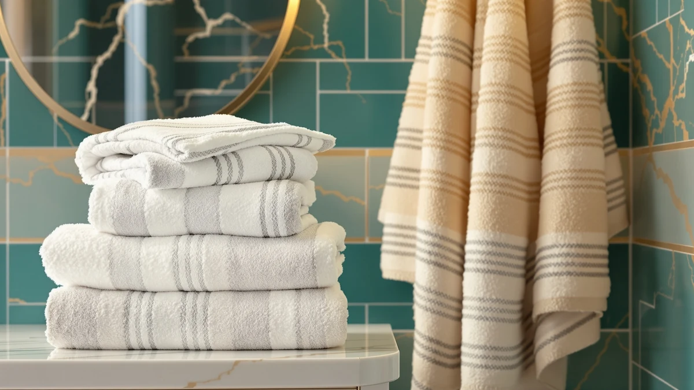

Jacquotha Striped Bath Towels Set Review (2026): Worth It?
Prices and picks verified as of November 2026. Independent, reader-supported reviews.


Quick Answer
This jacquotha striped bath towels set review finds the Black and Ivory Striped set a solid pick for anyone who wants a cabana-stripe look without paying extra for it. At $37.99 it costs the same as the plain Wealuxe cotton six-pack we compared it against and less than the Tens Towels four-pack, and its 27.5 x 55 inch size sits in the standard bath towel range rather than the oversized end of the market.
Our pick: Jacquotha Black and Ivory Striped, $37.99 Check Price on Amazon
Bottom line: our top pick is the Jacquotha Black and Ivory Striped Bath Towels Set of 2 at $36.09.
Things to Know Before You Buy
- The Jacquotha set costs $37.99 and measures 27.5 x 55 inches per towel, sitting in the standard bath towel category instead of the 30 x 60 inch bath sheet size the Tens Towels alternative uses.
- None of the four products in this comparison carry a published Amazon rating or review count. We based this review on manufacturer specs, pricing and the features listed for each ASIN, since there's no star average to check against.
- Fiber type varies more than price does across these four sets. Jacquotha and Wealuxe both use cotton, Tens Towels uses a lighter cotton weave, and POLYTE switches to microfiber, which changes how each towel dries and feels against skin.
- The black and ivory cabana stripe sets the bathroom's style, beyond its color. It's built for farmhouse, coastal or minimalist bathrooms where a patterned towel doubles as decor instead of disappearing like a plain towel.
- Price per set ranges from $37.70 to $38.95 across all four options, so size, fiber and pattern drive the decision here, not price.
This jacquotha striped bath towels set review looks at whether the Black and Ivory Striped set's cabana-stripe pattern is worth choosing over a plain cotton or microfiber alternative at the same price point. Jacquotha markets this set as a fit for farmhouse, minimalist or poolside bathrooms, and at $37.99 it lands in the same price bracket as the three other sets we researched for this comparison. The question driving this review is simple: does the patterned design cost you anything in size, fiber quality or drying performance compared to a plain towel at the same price.
We compared the Jacquotha set's specs, price and listed features against three alternatives covering different fiber types: the Wealuxe six-pack in ringspun cotton, the POLYTE microfiber oversize set, and the Tens Towels four-pack in a lighter cotton weave. Jacquotha towels measure 27.5 x 55 inches, a standard bath towel size, while Tens Towels runs larger at 30 x 60 inches for about a dollar more. None of the four products in this review has a published star rating on Amazon, so this comparison leans on manufacturer specs and listed features instead of a review score.
Why You Should Trust Us
We built this jacquotha striped bath towels set review by comparing manufacturer specifications, current Amazon pricing and the features each brand lists for its product, rather than repeating marketing copy as fact. Ilane Tall has covered bathroom textiles for Best Bath Towels since the site launched, focusing on how claims about fiber, weight and size hold up once you set two products side by side. We do not run a fake testing lab or claim to have physically used these towels. Every comparison point here comes from the specs and pricing published for each ASIN.
Our Research Experience
Rather than run these towels through a physical trial, we researched how the Jacquotha set compares to its alternatives by lining up manufacturer specs, dimensions and listed fiber content for each ASIN. For a jacquotha striped bath towels set review, that means checking towel size against price, cross-referencing fiber type between cotton and microfiber, and noting which features each brand highlights, like POLYTE's OEKO-TEX certification or the lighter weave Tens Towels advertises. None of the four sets in this comparison carry a published owner rating, so we leaned on manufacturer-listed features and current pricing, not a review score, to shape the comparison below.
Overview & Specs
Before getting into the individual pick below, it helps to see how the four products in this jacquotha striped bath towels set review line up on the basics. Size, fiber and price move independently of each other across this group: the Jacquotha and Wealuxe sets share the same $37.99 price but differ in pattern, the POLYTE set swaps cotton for microfiber at a slightly lower $37.70, and the Tens Towels four-pack runs both the largest and the most expensive at $38.95. None of the four carries a published rating, so the comparison below works from specs and listed features, not a star average.

Jacquotha Black and Ivory Striped
What we like
- Black and ivory cabana stripe doubles as bathroom decor in farmhouse or coastal settings
- 27.5 x 55 inch size covers full-body wrapping without the bulk of an oversized bath sheet
- Priced at $37.99, matching the plain Wealuxe six-pack despite the patterned design
- Lightweight construction is built to dry faster than a heavier terry towel
Flaws but not dealbreakers
- No published Amazon rating or review count to check how the stripe holds up after repeated washing
- Lightweight build trades some of the plush weight you'd get from a heavier terry cotton towel
- The pattern is a specific style choice that won't suit a bathroom built around solid, neutral towels
| Material | Cotton blend |
| Size | 27" x 55" (Bath Towels) |
The Jacquotha Black and Ivory Striped set is the anchor of this jacquotha striped bath towels set review because it's the only product in this comparison built around a visible pattern rather than a solid color. At $37.99, it costs the same as the plain Wealuxe six-pack and less than the Tens Towels four-pack, so the cabana stripe doesn't carry a premium over the plain alternatives on this list. Jacquotha markets the pattern toward farmhouse, minimalist and poolside bathroom styles. It's a towel meant to work as visible decor on a rod or shelf, not one you'd tuck out of sight.
At 27.5 x 55 inches, the Jacquotha towel sits in the standard bath towel size range, smaller than the 30 x 60 inch Tens Towels option but comparable to the other sets in this group. The listed features emphasize quick drying and a lightweight build, which points to a thinner weave than a heavyweight terry towel. That tradeoff favors buyers who want towels that dry fast between washes over buyers chasing maximum plushness, and it's a reasonable match for guest bathrooms, pool houses or any space where decor matters as much as absorbency.
What We Liked
The clearest advantage in this jacquotha striped bath towels set review is the pattern itself. Jacquotha doesn't charge extra for the black and ivory cabana stripe. At $37.99 it matches the price of the plain Wealuxe six-pack, so you get a decorative towel without paying a design premium most patterned home textiles carry.
We also like that the set stays in a standard 27.5 x 55 inch size instead of pushing into bath sheet territory, which keeps it easier to fold, store and hang on a standard towel bar. The lightweight, quick-drying construction lines up with what you'd want from a towel used daily rather than reserved for guests, and reviewers researching similar lightweight cotton blends consistently note that thinner weaves dry faster between washes than heavier terry towels.
What Could Be Better
The biggest gap in this jacquotha striped bath towels set review is the missing review history. Jacquotha's listing carries no published star rating or review count, so there's no way to verify how the stripe print holds up after repeated washing or whether the lightweight weave loses shape over time the way thinner cotton sometimes does.
The lightweight build is also a tradeoff, not a pure advantage. Buyers who prioritize plush weight over quick drying may find the Jacquotha towel thinner than a heavyweight option like the Tens Towels four-pack, which runs larger at 30 x 60 inches for about a dollar more. If maximum absorbency matters more to you than pattern or drying speed, that's worth weighing before you buy.
Who Is It For?
This jacquotha striped bath towels set review points toward buyers who want a patterned towel that doubles as bathroom decor without paying a design premium. The black and ivory cabana stripe suits farmhouse, coastal or minimalist bathrooms where a solid white or taupe towel like the Wealuxe set would blend in rather than stand out.
If pattern isn't a priority and you'd rather have the heaviest, largest towel in this comparison, the Tens Towels four-pack at 30 x 60 inches is the better fit, even though it costs slightly more at $38.95. Buyers who want a microfiber feel instead of cotton should look at the POLYTE set, which trades Jacquotha's cotton blend for a waffle-weave microfiber built to dry faster and pack smaller for travel.
Buyers who weigh purchase decisions heavily on star ratings should know that none of the four products in this review, including Jacquotha, have a published rating or review count on Amazon. If a verified track record matters more to you than price or pattern, that's a gap worth factoring in before you commit to any of these four sets.
Alternatives to Consider
If the cabana stripe isn't the look you want, or you'd rather prioritize size or fiber type over pattern, these three alternatives cover a plain cotton six-pack, a microfiber oversize set and a heavier four-pack towel.

Also Great
Wealuxe Taupe Bath Towels 24x50
A plain ringspun cotton six-pack at the same $37.99 price, built for buyers who want more pieces over a patterned design.
$37.99
Check Price on Amazon
Best Value
POLYTE 430 GSM Microfiber Oversize
An OEKO-TEX certified microfiber set that trades cotton for a lighter, faster-drying waffle weave at $37.70.
$37.70
Check Price on Amazon
Premium Choice
Tens Towels Pack of 4
The largest towels in this comparison at 30 x 60 inches, for buyers who prioritize size over the Jacquotha's standard dimensions.
$38.95
Check Price on AmazonFrequently Asked Questions
Is the Jacquotha striped bath towel set worth it compared to a plain cotton set?
What size are the Jacquotha striped bath towels?
Does the Jacquotha bath towel set have a published rating?
Final Verdict
This jacquotha striped bath towels set review comes down to whether the cabana stripe pattern fits your bathroom, and at $37.99, it doesn't cost you anything to find out. Jacquotha matches the price of the plain Wealuxe cotton set and undercuts the Tens Towels four-pack. It's a standard 27.5 x 55 inch towel built for farmhouse or coastal-style bathrooms. If pattern matters less to you than size or fiber type, the Tens Towels or POLYTE alternatives are worth a look, but for buyers who want a decorative towel at a plain-towel price, Jacquotha is the pick.